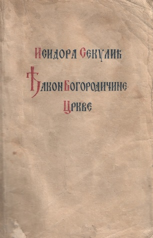

„Đakon Bogorodičine crkve“ je roman srpske književnice Isidore Sekulić , objavljen u zagrebačkoj izdavačkoj kući Knjižara Z. i V. Vasića 1919. godine.
Roman je ispripovedan u trećem licu i u središtu zapleta leži mistička ljubav koja se rađa između pijanistkinje Ane Nedić i monaha Irineja dok priređuju liturgijsko-muzičke koncerte u Bogorodičinoj crkvi. Anin i Irinejev svetonazor se predočava esejističkim pasažima o smislu umetnosti, stvaranju, odnosu etike i estetike.
Iako je ovo jedini roman Isidore Sekulić, on je dugo bio ignorisan. Uz saglasnost autorke bio je isključen iz korpusa prvih izdanja njenih odabranih dela. Knjiga je ponovo štampana tek 1997. da bi usledilo još nekoliko novih izdanja.
Po motivima ovog romana i pripovetke "Ambicije, dim" Isidore Sekulić, nastala je drama „Đakon” Ane Đorđević, koja je napisala tekst i režirala predstavu za Srpsko narodno pozorište. Drama je premijerno izvedena 13. aprila 2013. na sceni „Pera Dobrinović“.
Isidora Sekulić ( Mošorin , 16. februar 1877 — Beograd , 5. april 1958) bila je srpska književnica i akademik. Bila je prva članica Srpske akademije nauka i umetnosti.
Rođena je 16. februara 1877. godine u podnožju Titelskog brega, u bačkom selu Mošorinu kod Titela. Detinjstvo je provela u Zemunu, Rumi i Novom Sadu. Školovala se u Novom Sadu (Viša devojačka škola), Somboru (Srpska preparandija) i Budimpešti (Pedagogijum). Radila je kao nastavnica u Pančevu u Srpskoj višoj devojačkoj školi od 1897. do 1909. godine.
Položila je 1898. godine ispit za građanske škole iz francuskog jezika i književnosti. Posle toga radila je u Šapcu (1909-1912) i Beogradu. Doktorirala je 1922. godine i bila je prvi predsednik Udruženja pisaca Srbije.
Govorila je više jezika, i poznavalac više kultura i područja umetničkog izražavanja, Isidora Sekulić je kao pisac, prevodilac i tumač književnih dela ponirala u samu suštinu srpskog narodnog govora i njegovog umetničkog izraza, smatrajući govor i jezik kulturnom smotrom naroda.
Značajnija dela:
Glavna junakinja je mlada pijanistkinja Ana Nedić. Ana je obuzeta muzikom i u svojoj strasti teži čistoj umetnosti, živeći povučeno i gotovo asketski.
Njena glavna okupacija je priređivanje pevačkih i horskih deonica za nedeljne liturgije u Bogorodičinoj crkvi. U službu crkve dolazi mladi monah Irinej, koji je postavljen za novog đakona.
Između Ane i Irineja rađa se čista mistička ljubav. Ipak, vremenom između njih počinje da se rađa i telesni aspekt ljubavi, te dolazi do neočekivanog poljupca. Ana, otkivajući telesnost, odlučuje da se uda za doktora Paškovića jer shvata da je spiritualni aspekt ljubavi ne može u potpunosti ispuniti. Nakon što je tu odluku saopštila Irineju, između njih opet dolazi do poljupca.
Ђакон Богородичине цркве - preuzeto 1.7.2023.
Исидора Секулић - preuzeto 1.7.2023.
https://www.cupavakeleraba.com/2021/04/06/prikaz-romana-djakon-bogorodicine-crkve-isidore-sekulic/ - preuzeto 1.7.2023.
Fotografije: Izvor
Priredila Tamara Petrović